#
Off-topic Rants
Sam Robinson wants to be taken seriously. After years of frustration, indifference and rejection, Sam’s had enough. Today’s the day that all of that changes. Today, he gets the job that makes something out of his pitiful existence. After a crazy night of near death experiences out with his best friend Tony and Tony’s sister May, Sam drags himself to another job interview, trusty briefcase in hand. A mix-up at the train station leaves Sam holding the wrong case – a case that belongs to a dangerous man, who owes it to an even more deadly villain. Stuck between two charging bulls, Tony and Sam have to think fast and work together to save their asses or risk losing everything.
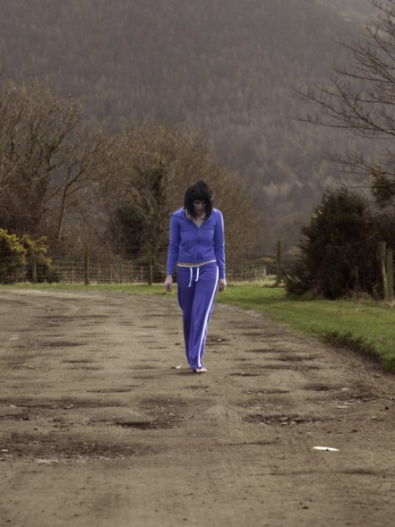
Well it’s that time of year again – MIFF time! Apologies for the lack of blog posts recently. For those of you that have been keeping an eye on the site, you’ll know that I’ve been overseas since February and have only just arrived back (you can see some photos of my travels here). But now I’m back, and things are seriously busy at the office! We are working full steam ahead on our first feature film, SHOTGUN! – so things are certainly go, go, go! Stay tuned for details, but in the meantime…
For those of you that are needing a bit of inspiration, make sure you have a look at this TED Video staring James Cameron discussing life before Avatar. It’s well worth a look! Enjoy…
It seems like so long ago now that we were on the hunt for people to help us build an animatronic hippo for Pocket Bonfire’s production of “There’s a Hippopotamus on our Roof Eating Cake”! Well, not only has principle photography well and truly wrapped, but even post production is now slowly drawing to a close – which is all very exciting! For further details on the production make sure you keep an eye on Pocket Bonfire’s Website. Exciting times certainly lay ahead, as we have big hopes for this amazing little film! Congradulations Jaime Snyder (Director), Joel Sharpe (Producer), Jessica Lawton (Editor) and Lachlan Harris (Sound Design) for all their hard work! It looks like it’s paying off… We can’t wait to see the finished result!
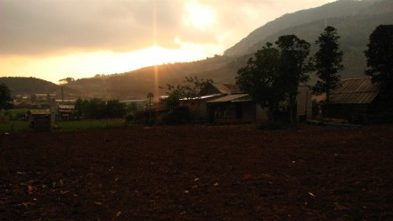
Chicken Village in Vietnam I can’t believe that this is my first post for 2010! It seems as if I’ve been trying to put together this blog entry in my head for months now… and the fact of the matter is, I have! Lots of things have been happening, and I’ve got lots to tell… So from the offset – please let me warn you that this post may be a bit all over the place, with lots of random ideas, and no particular direction. But, hey! If you actually read this, then this is the kind of thing you’ve come to expect by now!
The amazingly talented director Rhett Dashwood has just wrapped post production on his video clip “Black Bones”, for a great band called Teenagersintokyo. The video clip looks amazing (it was shot on Vision Research’s Phantom high speed camera), however that’s the not the only reason I’m writing about it here.
It seems like ages since I last gave you all a progress report on the blog – and guess what, it has been! The last time I gave you a proper update was in June, and it’s now already November. How times flies! Well, as per usual, we’ve been busy. Very busy!
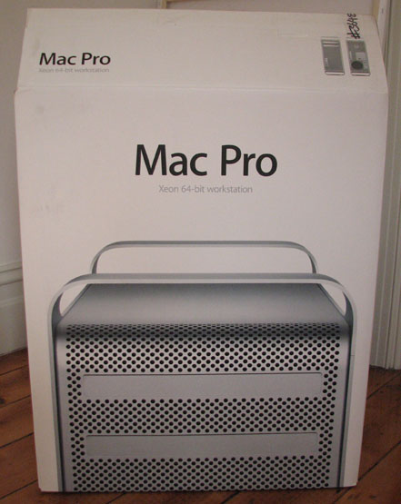
The company I work for (when I’m not busy doing latenite films related work) recently purchased a brand new MacPro. Nothing too fancy, just something that can easily handle offline editing in Avid Media Composer and Final Cut Pro. Here are the specs:
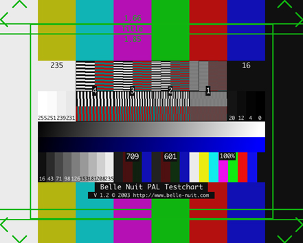
If you have read any of my previous blog entries here you would know that I am a long time Final Cut Pro user, but since the beginning of this year I have been working at an offline edit house (in addition to the time I spend doing latenite things!) that primarily uses Avid on Macs. As we solely do offline editing here and all of the grading and online is done at other more specialised post production facilities, generally speaking we don’t have to worry too much about gamma, colour spaces and getting files in and out of various programs. Most of our jobs are shot on 35mm, and get telecined to DVCAM which we then edit in DV-PAL, export an EDL + OMF and we’re done. For RED Projects we normally get dumped a hard drive full of R3Ds which we convert to DNxHD using RED Rushes and bring all these files in Avid via an ALE. Everything is fairly simple and straight forward.
At long last, finally some of our hard work is hitting a little thing they call the world wide web! Due to various reasons, we have decided to release Happy Sundaes to the world, free of charge and have also put the SAKOOZ teaser/trailer up on YouTube.
As most of you will know, I recently wrote an article on this blog listing my Final Cut Studio 3 Predictions. It has gotten a really great response so far, and has helped generate a lot of incredibly interesting discussions. Regardless of whether my predictions come true or not, I think the article has really helped throw some new ideas and concepts into the public domain and has sparked a lot of imagination in some extremely talented people, which is fantastic. I’ve gotten lots of messages, e-mails and comments recently with cool technology and features which should be added into Final Cut Pro – some of which I really hope make it into the next version. Personally I think the more people talk about these kinds of things in a public forum, the more chance Apple developers will get ideas from these discussions, and the more chance they will actually think about implementing them.
Hello everyone! Well, it really feels like it’s been a long time since I last posted any updates, and guess what… it has been! As always we’ve been incredibly busy behind the scenes with so many different things. As some of you may have noticed we launched a new blog run by Nick Colla, which has been attracting lots of hits. I’m still unsure whether it was a wise move to give Nick his own blog, but I haven’t received any court orders as of yet, so that’s always a bonus.
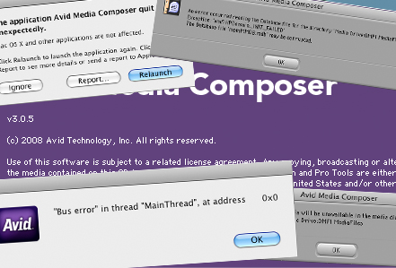
There has been a lot of discussion on the Internet over the last few months in regards to Avid vs FCP. People have been blogging about it. Scott Simmons from The Editblog has written many entries over the years discussing this topic, as has Shane Ross on his blog Little Frog in High Def. There has been several sometimes heated podcast discussions about it – although when That Post Show got stuck into the topic at length (almost two train rides long!), the panel of experts remained surprisingly level headed. Although, I think it’s fair to say that John Flowers, the host of the show is very much an Avid man, and tends to show his Avid bias on nearly every episode. As Final Cut Users wait for the long awaited major update – Twitter has been flooded with discussions about what users love about Final Cut Pro and Avid, and what users really hate about both products.
Kaltura has just released it’s brand new Developers Community website, and I’ve actually been fortunate enough to feature in the developers spotlight! Below is a quick little video of all the people featured in the developers spotlight (powered by the Kaltura player) – you’ll have to skip forward a couple of people to see me…
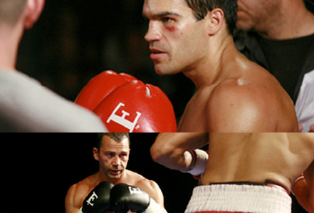
A month or so ago, whilst doing some research for the “cut your own trailer” SAKOOZ site, we came across a film called Two Fists One Heart. This is a contemporary story set in Perth Western Australia, about Anthony Argo – a young Italian/Australian boxer played by Daniel Amalm – being pushed to the limit by his Sicilian father and trainer, Joe (Ennio Fantastichini). Joe wants Anthony to achieve the success in the ring that he was denied as a young man. When Anthony meets Kate (played by the stunning Jessica Marais – from the television series Packed to the Rafters), he begins to see his life – and the role violence – in a different light. He loses focus on boxing and, in a confrontation with his father, learns about Joe’s painful past. Joe turns his back on his son. Anthony leaves the ring spending time with Kate in their blossoming romance. He earns his living as a nightclub bouncer . When Anthony becomes involved in a street fight at a public event Kate dumps him. Anthony reflects on who he is and all that he has recently lost. Tom (played by the amazingly talented Tim Minchin – who I had no idea actually did screen acting!), Kate’s comedian brother helps Anthony see the world and his life from a different perspective Joe is betrayed by Nico (played by Rai Fazio – who also wrote the screenplay), another boxer of Sicilian decent. Anthony, now mature enough to make his own decisions, decides to honour his father and his family and re enters the ring to fight his nemesis Nico.
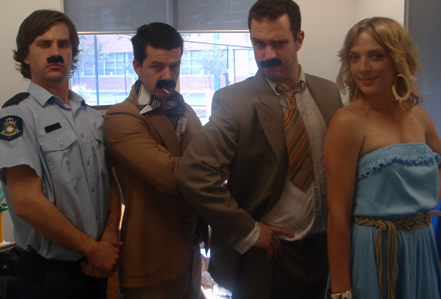
Apologies for keeping you all out of the loop last month. It was certainly never my intention – we’ve just been flat out as always! However, those that have been following us on twitter at least know we’re alive, as we’ve been regularly posting cool things we come across.
I’m inspired. I want to swear a lot. In a positive way. But I won’t. At least not at the moment. I’ve literally just got back from the cinema after watching Alex Proyas’ latest film, Knowing. All I can say is… Wow. I’ve been looking forward to watching this film for a long time. There are many reason for this. Firstly, I loved I Robot. The special effects were great – plus it was just a really fantastic film in general. Great score, great script, great acting… great, well everything. Well apart from the mass amounts of product placement – but we’ll let that slip. Secondly, Alex is an Australian. Like most Aussie’s, I like to support our own. Thirdly, most of the film was shot in Melbourne – my home town. And last, but not least – this film was shot on the RED camera. Having work with the RED on the Sakooz trailer, I have a very fond spot in my heart for this unique piece of revolutionary technology. I always planned to see Knowing when it first opened at the cinemas (last Thursday), but I’ve been caught up with heaps of other things. But, tonight, I’ve finally seen it. And I’ll tell you what – the fact that I’m blogging about it late at night just goes to show how much this movie has affected me. As I said… Wow.
I’m extremely lucky to have landed a fantastic job a few weeks ago as an assistant editor full time this year at a amazing boutique edit house in Melbourne. At a time where job security is certainly not ensured, unemployment is high and the economy is in the toilet, it’s great to have a job, let alone a challenging, exciting and fun job working alongside an award winning group of just really great people. But like with everything in life, there’s always some negatives. For me, the simple fact that I’m working five days a week means that I have less and less time to concentrate on my own film projects. After a big day at work, plus a few hours of commuting home, there’s not much time left to get fired up again about all the others things on your to-do list. As always, time in against me. But at least I’m doing something I really enjoy.
The last couple of weeks have been hectic, but unfortunately it’s been mainly projects outside of latenite. I’ve personally been interstate working on various live shows, and have also recently start working full time for a post house in Melbourne on top of lots of other ventures, so the Sakooz site has been put on another temporary hold, which is a bit of a pain. As much as I would love to have it all done by the end of this month (and to be honest, it’s VERY close to being finished), I just don’t think it’s going to happen – especially with the bushfires that keep creping up on us! Therefore, we will be postponing the launch till April just to be on the safe side.
There has been a lot of discussion on the Internet the last few months in regards to what Apple is going to do with the seemingly out-dated Final Cut Studio package. Lots of people have written blog articles about what features they would like to see in the new versions of Final Cut Pro, Soundtrack Pro, Color, etc. The general consensus from the Internet community seems to be that Final Cut Studio is due for a very major update, or even a complete overhaul. Conversations about this are appearing wide-spread on podcasts, twitter, forums and through all the major social networks.
One minute it’s Christmas, then zap! Next minute, January is nearly over. How times flies! Hello everyone, and welcome to our very first entry for the new year – even if it is slightly late. I hope you all have a fantastic holiday break, and a terrific New Years Eve! And, if you’re in Australia – I hope you’re enjoying the ridiculously hot weather! Although we personally do love the sun and the beach – when you’ve got a week with temperatures on and above 40 degrees Celsius, things start to get a little bit scary, as the Sakooz headquarters is in the middle of the Dandenong Ranges (i.e. a forest). But as terrifying as it is, it also forces you to think about something very important – backups. What would you do if the worst happens, and your studio burns down? Do you have your camera originals off-site? Do you have backups of all your past and current projects? How quickly can you “recover” from a disaster? There are also scary, but terribly important questions we’ve been asking ourselves over the past couple of weeks. Although it’s probably not the most ideal way of handling things, we currently have a box which we call “the mobile vault”. The vault contains all our original camera tapes (MiniDV, DVCPro50, DVCProHD, etc.), DVD backups of Final Cut Project Files, printed copies of EDLs, Hard Drive’s containing project backups, an equipment inventory, copies of important documents (i.e. CVs), etc. The vault is always kept as the safest possible location – normally the grandparents, as they’re generally always home. In a perfect world, it would be great to have LTO tapes containing all this material instead of cheap hard drives and DVDs, and also to have multiple vaults, just to be extra safe. But unfortunately all these things cost money, and at the end of the day, as long as we don’t loose any “current projects” (i.e. project we’re currently working on), life will go on. Although it’s great to have the original project files of past projects – the chances of going back to them are fairly slim. So anyway… just something to keep in mind. If you are in a bush fire area, make sure you have a good strategy in place in case disaster attacks.
It’s amazing to think that Christmas Day has already been and gone. This year has gone so incredibly fast it’s just not funny! On behalf of everyone at latenite films, I just want to wish you all a very merry holiday period, and an extra special New Years Eve! Thanks to everyone who has helped in any way, shape or form with Sakooz this year – and a big thank you to all of our regular blog readers! I really appreciate all your kind e-mails, comments, and suggestions! It’s so nice to think that at least three or four people are actually reading this thing! Your continued assistance and support will certainly will not be forgotten!
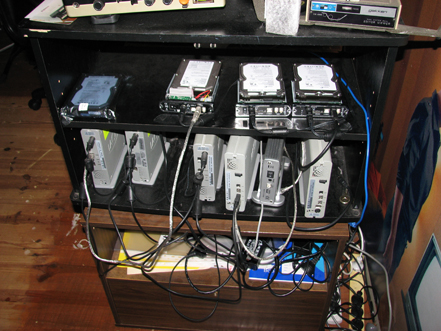
When we first started thinking about the best way to put together the Sakooz trailer, we originally thought that Super 16mm and a film scan route would be the most appropriate option given our budget, and the “Hollywood trailer” look that we were after. However, after various camera tests (we’ll post some further information on these tests another time), and a bit of number crunching, it became clear pretty quickly that shooting on the RED ONE was going to achieve better results, cost less and make the post production just that little bit easier (at least in theory) by keeping everything digital. And so, after getting in touch with Cail & Pete from Inspiration Studios, and doing some tests with their brand new toy camera – we decided to shoot the Sakooz trailer on RED.
Once again time has gotten away from me – so this news is a bit old now! But, hey – better late than never! The Sakooz trailer had it’s first official public screening on Tuesday 2nd of December 2008 at the Australian Centre for the Moving Image in Melbourne, Australia as part of the Swinburne University Graduation Screening Program. And from all reports… everyone seemed to love it! It was a fantastic night, with so many quality films on show (12 student works in total – ranging from short films, to TV pilots, sketch comedies, etc.). Congratulations to all of the students who got to show their films at the screening, and thanks to everyone involved for putting together the event (especially James Verdon)!
You won’t believe it – or at least, I certainly don’t! I think the trailer is actually finished. Actually scrap that – the trailer is finished! For now anyway! After many, many months of hard work, with so many ups, and so many downs, today the Sakooz trailer was officially printed onto the DVCProHD tape destined for the ACMI Screening on the 2nd of December. For those that live in Melbourne, you should definitely come along! Frank Strangio, our incredible and unstoppable composer battled illness and an ever jam-packed schedule to not only fit in the time to put together a three minute score for the trailer, but create a score that is pure gold. Despite the fact that we didn’t have any money to afford “real” instruments, the score sounds so big, so epic and just so heart felt and moving. As you can tell – I’m very happy with the end result! For anyone looking for an absolutely INCREDIBLE composer, who is also just the most lovely guy you’ll ever meet – check out Frank’s site. You can also see his huge list of credits on IMDB.
It’s typical! The day we finish the Sakooz trailer is the day that RED and Apple release a software update that would have made my life so much easier. This update is BIG news for anyone who has to deal with RED footage on a Final Cut Pro system, as it now means you can edit R3D files natively on Final Cut Pro (in much the same way as you would edit DVCPRO HD footage coming from something like a HVX). This software is literally hot off the press, so there is bound to be bugs and issues, but from most (actually scrap that… SOME) reports, everything seems to be working as planned. For our trailer, what we ended up doing was bringing in 1920×1080 DPX Sequences into Color – now you can just “Send To” from Final Cut, and the native REDCODE timeline is re-created in Color. This will save so much time for everyone, and also help ensure you retain the maximum quality. Exciting times certainly lay ahead! Keep an eye out on Reduser! Thanks Apple & RED!
It’s official! All the pictures elements are all done. It certainly wasn’t easy – and there has been a lot of brain numbing rotoscoping the last few weeks, but all the effects are done, the grade is complete and everything is ready and waiting for the final soundtrack to be attached. These are certainly exciting times! It just amazing how much time, effort and energy goes into a tiny little three minute trailer. But from all accounts, it’s certainly been worth it. The footage looks incredible, and the effects (despite being made on a shoe string budget) don’t come up too badly. Now all we have to hope is that when people actually watch the trailer, it makes them want to see the feature length film! Only time will tell…
As always, time has flown, and deadlines are getting closer and closer. In a perfect world, we’d like to have everything completed by next Friday 7th. Whether or not we’ll be able to complete that deadline, well, only time will tell. Everything seems to be going pretty well. Colour grading is currently being tackled, and most of the visual effects are now completed – we’ve only got a few of the more tricky ones to go. The biggest worry we have currently is whether or not we’ll have the score completed by then. But fingers crossed! Another, more subjective problem is working out what we actually do with the soundtrack! To voice over or not to voice over, that is the question.
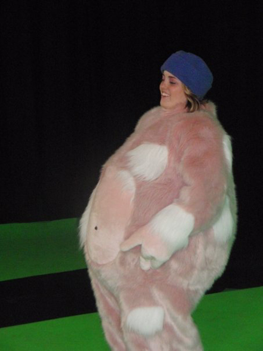
Zap! One minute it’s September, and the next it’s all of a sudden October. It’s certainly been an incredible year and it’s rapidly disappearing. So what’s been happening since my last post – well, like always, lots! This week we successfully locked down the picture edit. It certainly wasn’t easy, and our Final Cut Pro project file has so many different edits and versions within it, it’s ridiculous, but we made it in the end! But, even though this is a big step in the right direction, there is still a very long way to go, and we don’t have much time to do it all. The musical score is under way, as are the many visual effects – but even after we complete these things, we still need to do the final colour grade, the sound design, edit and mastering, plus get the final product onto all the various media and formats for distribution. Although we’re not in a bad position, we’ve basically got three or so weeks to wrap everything up, so the pressure is definitely on! So with that said, I’ve got to get back to work. Eventually (probably next month in all honestly), we will get around to uploading all the things we’ve been promising for months, like some more production stills, video blogs, camera tests, etc. But in the meantime, here are some happy snaps from a recent green screen shoot for the Sakooz trailer. We had to shoot some character pick-ups for some of the visual effects. To save money, we only build one alien character (Pinky), but for the purposes of the trailer, we’re shooting some material of the Pinky character against a green screen, then grading the costume to a different character (i.e. blue) and then digitally inserting the shots into the scenes, so that there’s more than one creature. Because the additional character only appear very small in frame, we can shoot these elements on a HVX202 (as opposed to a RED, which we used for principle photography). We also used a different cast and crew for these pick-ups. A big thank you to Julia for jumping in the costume! Judging by the photos though – it looks like she had at least a little bit of fun…
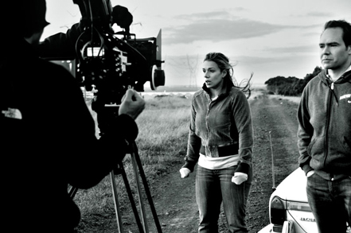
As promised, here are some absolutely gorgeous photos taken by the incredible Michelle Leong from Day Two of the Sakooz shoot. There will be lots more of these fantastic images to come in the weeks ahead, but until then, enjoy… Also, just to give you a quick update, we are still madly cutting together the trailer. We’ve gone through a few drafts now, and are still experimenting trying to put together a trailer that explains the story (but doesn’t give everything away), introduces the characters, looks and sounds amazing, and isn’t boring or clichéd. It’s not an easy task, as we’re limited to what we shot on our very hectic five day shooting schedule – but it’s a lot of fun just messing around with the edit and trying new things. One of the big problems I’m finding so far is putting together a sequence that won’t confuse the audience too much – because I know the story so well, it’s easy to forget what the audience do and don’t know. Also, a lot of things that looked good on paper, simply don’t translate through to the screen – so it’s a challenge thinking outside of the box, and messing around with the edit to give certain shots new meaning and context.
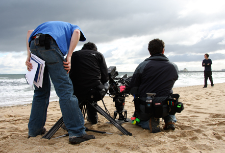
Once again, apologies for the lack of communication since my last post. It’s been a very, very busy time! Not only have I been flat out with everything Sakooz related, but I’ve also been working non-stop on other students third year films. I’ve had a pleasure of working on some really AMAZING student films the last month or so. One of the most recent films I worked on, was filmed on a breathtaking farmland location out past Ballarat, and had Adam Arkapaw behind the camera (shot on Super 16mm). Having just seen the rushes – I must say, the footage looks INCREDIBLE! Congradualtions to Tim, Bec, Cec, and Jordy – you have done an amazing job pulling together such a fantastic crew, and I can’t wait to see the finished result. It’s going to be one very beautiful and moving short film. Congradulations! I really can’t wait for the 2nd of December, which is the Swinburne Graduation Film Screening at ACMI. There really is going to be some amazing work up there on the big screen.
Here is a quick little video of the snow that decided to invade us whilst we were building the Sakooz spaceship set. It was freezing! We’ll be posting lots more videos and photos over the coming days and weeks, so make sure you keep an eye out on this blog!
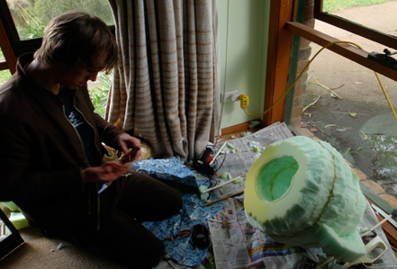
As promised, here are a few snap shots of Pinky’s head and the spaceship construction in no particular order. Enjoy! David is working away on Pinky's head. David is working away on Pinky's head. This is Pinky's skull before skin is applied. This is Pinky's skull before skin is applied.
Firstly, for those that actually made it through the last blog entry – I’m amazed! It was a bit of an epic, so a massive thank you to those that took the time to go through it all! Sorry for all the spelling and grammar mistakes! Also, a big thank you to Mike Seymour who left a comment letting me know that he was quoting Ed Catmull, co-founder of Pixar. I’ve since updated the entry. I really hope that it was of some interest and help to other film-makers out there – as I’m sure there’s some lessons to be learnt from our mistakes. As ALWAYS feel free to e-mail me or leave a comment if you have any questions!
Ok, I’ll warn you in advance. This is going to be a BIG blog entry. Quite possibly the biggest blog entry known to man. And yes, I’ve read all the “how to write blogs” articles on the Internet, and know that blogs are unlike books and newspaper – you need to keep them short and straight to the point. Blog readers have a short attention span, bla, bla, bla. But you know what – stuff it! The whole point of this blog is to help other film-makers learn from our mistakes, so I think the more information we jam into this, the better for everyone. Besides, no one is forcing you to read this anyway! And so, with that said, lets bring you up to speed with what’s been happening over the last few weeks. Hold onto your office chairs!
I know, I know… we’ve been really slack in terms of updating this blog! But I’ll tell you what, boy, oh boy, have we got some news to tell you! So many dramatic things have been happening since my last entry. So stay tuned! Once things settle down a little bit here, I will fill you in with all the details… It’s coming – I promise! And what you read what’s been happening, I’m sure you’ll understand while we’ve been a little bit preoccupied with other things…
Yikes! We begin principle photography in tweleve days! That’s only 288 hours away (give or take)! Oh dear! So much to do, so very little time. What’s been happening since I last wrote? Lots and lots. We’ve been doing some more camera and lighting tests on location, organising all the additional paperwork that needs to be done, finialising locations, building sets, costumes and props, tinkering with animatronics, blowing things up (pyro tests!), doing special effects tests – so much stuff! We’ve literally been jamming as much stuff as we possibly can into each day, and we’re making amazing progress! But despite this, the to-do list is still very long. Some time soon we’ll post some photos of Pinky’s head being put together, and once we’ve got shooting out of the way, we might even write up some proper posts on how we went about making it. Unfortunately that’s all I’ve got time for tonight. I’ve got to get back to work organising actors and crew! Speak to you again soon!
Bang! Another two weeks gone! Just like that. The closer we get to shooting the more problems we solve, the more problems we discover, and the more things we try to jam into a day. When I pressed “Publish” on my last post, we only had one cast member to find. This then increased to two, but luckily, thanks to another few days of long auditions we have now OFFICIALLY cast our complete film! We even ended up creating two new characters, which is a little scary, but we honestly feel it’s for the best. That’s the beautiful thing about independent film making – you can make this kind of decisions on the spot. Casting has taken up a lot of our time over the last few weeks – just trying to lock down the very best people we can. I’m VERY happy to say, that we have an amazing cast lined up – every member is truly fantastic. We also spent a lot of time meeting up with potential crew members, and sussing out more locations, writing countless e-mails, making countless phone calls, and most challenging of all – just trying to get some kind of a schedule together. It’s so unbelievably hard to get everyone (i.e. cast) in the same place at the same time – especially when you’re not paying anyone! It really is a logistical nightmare. If one thing doesn’t go to plan (i.e. a vital cast or crew member can’t work on a specific day, or a piece of gear or location is only available at a certain time), then it really stuffs up the whole “grand plan”, and some of the time you just need to re-think everyone from scratch. It’s not a job for the light hearted!
It’s July already. How crazy is that. The last two weeks just flew by. It’s scary. Seriously. I’ve just looked through my diary, trying to remember what we’ve been doing since I last wrote on this blog, and to be honest – I have no idea. It’s been chaotic. I wish I had some exact stats – we’ve driven so many km’s, wrote thousands of e-mails, made hundreds of phone calls, seen hundreds of people, drank so much coffee, watched no TV, ate very little food, seen many fantastic locations, begged countless times, etc. over the last few weeks. I know I say this every single blog entry – but it’s true. Everything is getting rapidly more intense with every day.
Once again another two weeks has just mysteriously ran away from us. It’s really scary to think that we’re pretty much in the middle of the year now. I’m a little bit scared that if I blink it will suddenly be September, and if I blink again it will be January 2009! So as a way to combat that I’ve gaffer taped my eye lids open. It doesn’t seem to be working – time literally is zooming past my eyes!
The last two weeks have been MASSIVE! After my last blog entry, we have had so many fantastic ups and so many depressing downs! It really has been an emotional roller-coaster of a couple of weeks! Now all I have to do now is try to remember everything that has happened…
OK… I’ll be honest. I haven’t absolutely no idea how anyone can maintain a daily blog – especially film makers. I just don’t understand how they can possibly find the time! We’ve been absolutely positively flat out since my last post – it’s really been a bit silly! Chris Jones I salute you! I have no idea how you not only find the time, but also write stuff that actually makes sense, and has good spelling and grammar! OK, so now I have to find back to what has actually happened over the last week…
A lot has happening this week – and boy, oh boy do I mean a lot! When you’re only getting around two hours sleep a night (maximum) you sure do get a lot done. But regardless of how much coffee you drink to keep you awake, you still seem to just run out of time. In film making, time is your number one enemy. It’s always against you, and it’s always looking for ways to make your life a living hell. But enough bitching about time…
Ok, so there may be a slight hint of sarcasm in the title for today. Unfortunately everything is not going exactly according to plan – but it’s not a complete disaster either! Yet – anyway! Nah, I’m kidding. We’re seriously heading in the right direction – a lot slower than we hoped, but on course none-the-less.
Not to be confused with Yang Chuan’s 1980 film, also set in Hong Kong and as of the same English translation, Kenneth Bi’s “Zhan. Gu (The Drummer)” is his third feature film (despite popular belief, as his first feature film, “A Small Miracle” only received a straight to video release). Nominated for the Sundance Grand Jury Prize, this film is the first from Hong Kong and Taiwan to be selected for competition in the festival, and is already gaining positives reviews all around the world, no doubt helped by Tony Leung Ka Fai receiving the “best supporting actor” award at Taiwan’s highly acclaimed Golden Horse Film Festival. However, the film is not without its critics – with many describing it as “ill-conceived” and “unconvincing”.
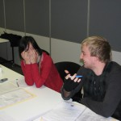
It’s extremely hard to believe it’s already been four days since I last updated this blog! Where the hell does time go? No really – I honestly want to know! So what’s been happening since my last message, well, quite a lot! Last Saturday we had more auditions – eighteen of them to be precise. Everything went smoothly, and there was some great talent in the mix! On Sunday we met up with Ben Hidalgo – our amazing DOP for the Sakooz project. We talked all things light, around a coffee table in Prahran, and started to put together a game plan for this epic adventure. Then on Monday is was back to uni, and a meeting with another Chris – an animatronics expert that studied at the VCA. After another discussion around the coffee table, and some more discussions and planning – we walked away a lot more confident than what we were on Friday. Everything seems to be heading in the right direction. Our DOP is the best (and I honestly mean it), so we have little to worry about in terms of that department. And now with another Chris on the team – we’ve got animatronics covered. So despite all odds – at the moment, we appear to be winning the war. Of course it’s still very early stages, and there are a lot more battles to go… Money is probably one of the biggest issues. Oh, if you’re rich, and have some cash to spare – then get in touch with us! Unfortunately, I’ve got to get back to work – but before I leave, here are some photos of our auditions:
Well, I’m very sorry to say that already we’re struggling finding the time to update this blog, and it hasn’t even been that long since we started it up! Thing is, we are absolutely flat out! And to make matters worse, our whole team seems to be getting ill in one way, shape or form! Isaac has bronchitis. David has tonsillitis. Caithlin is having surgery on her back. And Anli has been sick now with some kind of bug for the past couple of weeks. I just haven’t been sleeping… pretty much at all, so although I may not be ill, yet, I still look a little worse for wear!
So what exactly are we up to and the moment? What kind of crazy nut-case film are we trying to bring to life? Well, a quite a big one actually. At the end of last year we were worked on a documentary called “Superb Menura”. It was a major step up from our previous 16mm short, “Happy Sundaes”. And whilst we were busy filming doco footage, and getting surround sound recordings at absolutely crazy hours of the night, we were always plotting and planning for what we would do this year.
Aren’t there already enough blogs on the web? I’m mean seriously, if you type the word “blog” into Google, you get well over two BILLION results. Why on earth would we want to start another one? There’s already thousands of film making blogs scattered around the place… So what’s the deal?
Vittorio De Sica’s ninth film as director, Ladri di biciclette, has been widely cited as one of the finest films ever made and has helped cement the Italian-born actor/writer/director, as one of the world’s most influential and remarkable filmmakers of all time. Released in 1948, The Bicycle Thief, as it was titled in the US (or more accurately “Bicycle Thieves” if you go with the literal translation), is a seemingly simple film that has made and continues to achieve a massive impact on cinema viewers worldwide.